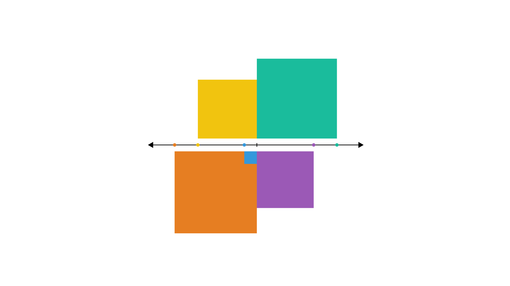
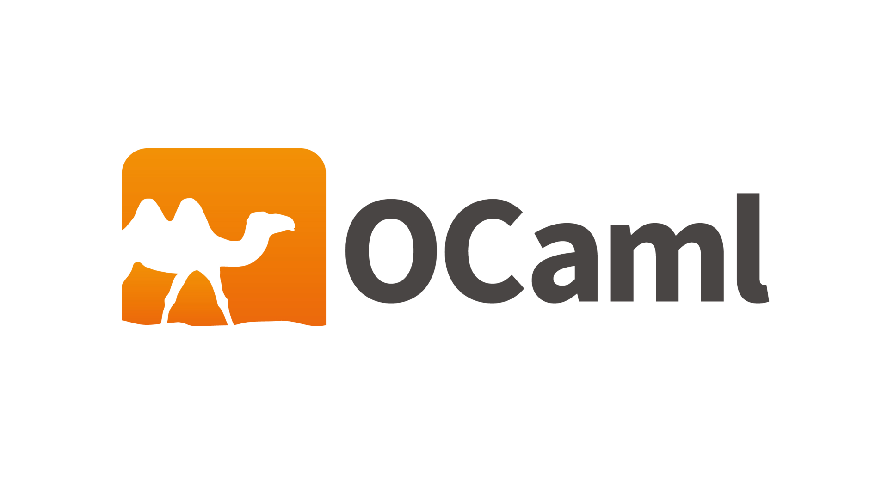
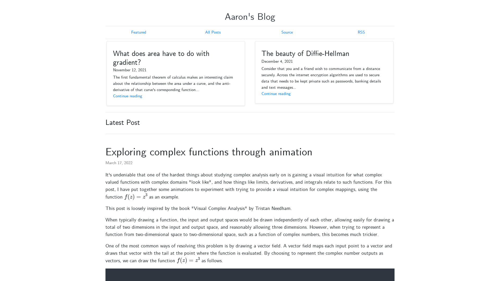
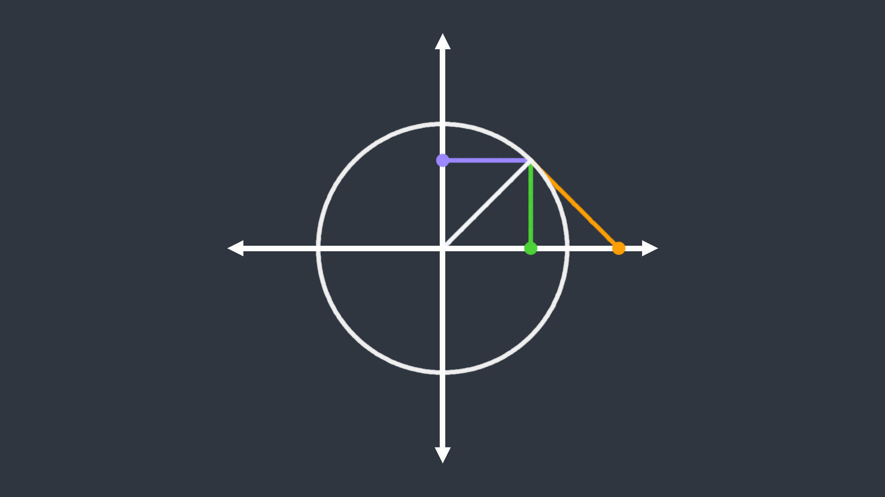
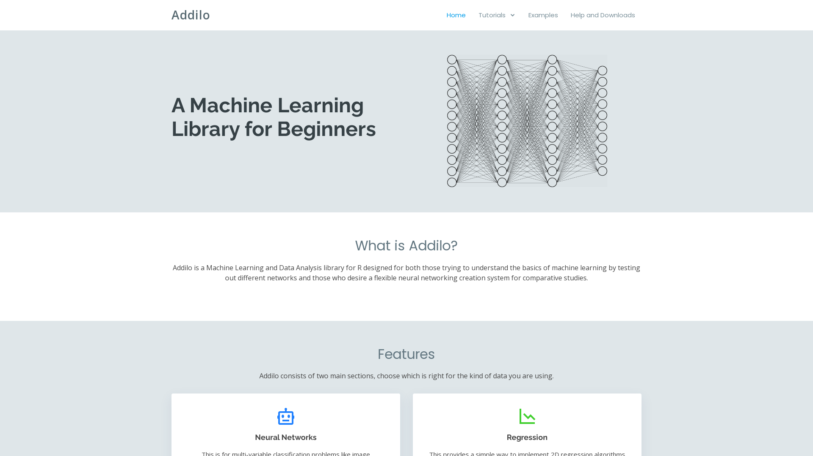
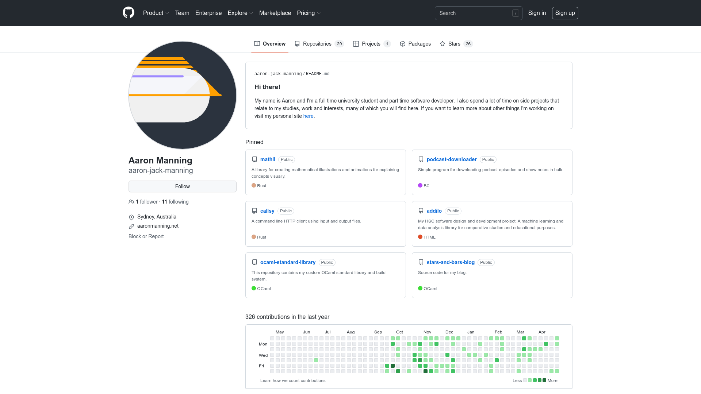

Aaron Manning

Probability, Statistics and Mathematical Reasoning
A textbook I am working on teaching introductory statistics.

Functional Programming with OCaml
A textbook I am working on teaching functional programming through the language OCaml.

Blog
I also write to a blog about mathematics, computing and sometimes whatever else is on my mind.

Mathil
A Rust library for illustrating and animating mathematical concepts.

Addilo
A machine learning library I created for my HSC Software Design and Development project.

Other Programming Projects
All other programming projects I have put online you can find on GitHub.